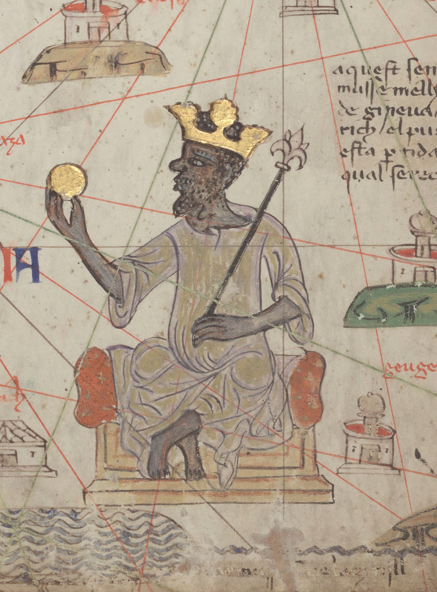

Western His story begins with the colonisation of "Ancient" Egypt
by "Ancient" Greece and subsequent appropriation of their belief systems and concepts. It was proven using
statistical methods by the Soviet Mathematician Anatoly Fomenko Jr that they were forging history by
duplicating chronologies and applying it to different identities to the extent that it can not be verified
that the year is 2024. This was done in an era where power was centralised among the Vatican, Aristocracy,
Merchants and bankers, violence became justified if you told a story and violence is profitable. The truths
of Europe have become missed-stories which has caused their primitive culture to be the source of the most
deadly conflicts in history. European historians claim there were "Dark Ages" lasting centuries,
constructing a distinction between Greece and "Ancient" Greece like they then did to Egypt after they
colonised it and renamed places, a strategy used through out his story to change the true story. The
creation of the Western lens has distorted our ideas of whats true and the effects are clear when looking at
the neo-colonial system orchestrated by the multinational merchants, private banks and international
organisations that do not serve us. This lens is why Israel is not considered a terroist state. It is why
the world is expected to care about Ukraines conflict but remain silent on the violence in Congo and Sudan
that Israel and many nations profit from. It is obvious who controls the narrative and theyve been
controlling it for a long time. Yet their oldest stories took place in Africa, before our story became oral
his story and the hero glyphs became heiroglyphs.
🚩
🚩
🚩
🚩
🚩
🚩
🚩
🚩
🚩
🚩
🚩
🚩
🚩
🚩
🚩
🚩
🚩
🚩
🚩
🚩
🚩
🚩
🚩
🚩
🚩
vjgv
ngoni,goni, circumcision, naletale/umtali, umqhele, crown, vocab? maseru mizraim,
amahlubi Musi Musi 1525–1550,
great zimbabwe, dry stone masonry, bakalanga/ranga, tau-rat torwa(taurat) dynast
butwa, solomons gold, musikavanhu, lemba,
6. golf de juda, eri confirmed by fake jews, bamileke, euro lit, chukwuma,
ndjamenna diy gid biy, fulani expansion, bamileke fleeing, damasake, lake gilead
loango kong, angolan jewso
7. shilluk shiloh, duwadh, Nyikang
8. Daju kingdom salih, dhu al qarnays, torwa dynasty, christian nubia, dry stone,
al quds, sahel
golf de juda, eri confirmed by fake jews, hausa esau, Daura

whydah, juda, mossi kingdoms maure, wagadou->eri
songhai, jatta, soundiate, saloum sine marabouts, djenno djeno dhar tchitt othe
tinbuktu, jews bilad al sudan, haratin blakjew metal workers